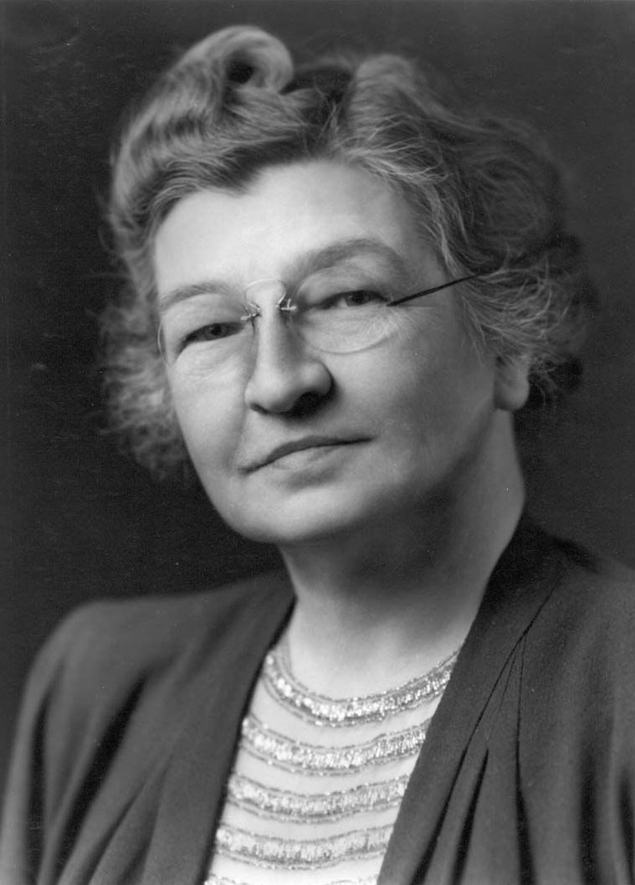
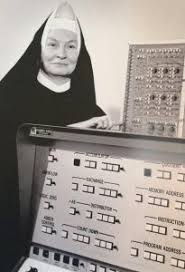

Role Models
ADA LOVELACE
December 10, 1815 — November 27, 1852
Diva of programming, already described the logical operations of a machine more than a century before the computer existed as we understand it today. Daughter of the romantic Lord Byron and confined to a society that prevented women from studying at universities, Ada fell in love with mathematics - and she was brilliant. He exchanged letters intensively with Charles Babbage, creator of the Analytical Machine, and published articles (signed only with his initials) that expanded the boundaries of information processing.
EDITH CLARKE
1883 - 1959
Born in a rural community in Maryland (USA), Edith Clarke graduated in mathematics and astronomy in 1908 and later studied Civil Engineering. She interrupted her studies to work as a human computer, but her passion spoke louder: in 1919 she became the first woman to earn a Master's degree in the Department of Electrical Engineering and Computer Science at MIT, becoming the first electrical engineer in the country. Two years later, he registered his first patent: a graphing calculator, which improved methods for solving electrical energy transmission problems. When she retired in 1956, she was a professor at the University of Texas, where she was the first woman to teach engineering. In 2015 she joined the National Inventors Hall of Fame.

GRACE HOPPER
December 9, 1906 - January 1, 1992
She was a North American computer scientist and Rear Admiral of the United States Navy. One of the first programmers at the Harvard Mark I computer in 1944, she invented the first compiler for a programming language (which turns programming code into binary code) and was one of the people who popularized the idea of a machine-independent programming language that led to the development of COBOL, one of the first programming languages to approach human language.

DOROTHY JOHNSON VAUGHAN
1910 - 2008
Born in the state of Missouri, Dorothy Vaughan graduated in mathematics and joined NACA, an agency that would become NASA in 1943. She specialized in computing and six years later led a group composed only of African American women trained in math. He dominated electronic computing, programming and the operational process of the first IBM machine used by the government agency. He retired in 1971. His story is told in the movie 'Stars Beyond Time'

MARY KENNETH KELLER
December 1913 - 1985
Born in Cleveland, Ohio, Mary Keller was the first woman to have a doctorate in computer science in the United States in 1965. She graduated in mathematics and did a master's degree in mathematics and physics in the 1940s. Her doctorate from the University of Wisconsin covered the construction of algorithms that made analytical differentiation in algebraic expression, written in CDC FORTRAN 63. At the time of her graduation, the University of Dartmouth only allowed men, but broke the rule so she could work at the computer center. He later founded the Department of Computer Science at Clarke College in Iowa, where he taught for 20 years.

HEDY LAMARR
November 9, 1914 - January 19, 2000
She was an Austrian actress and inventor based in the United States. His most significant technological contribution came during the Second World War, with his co-invention, together with the composer George Antheil, of a communications system for the United States Armed Forces that served as the basis for the current telephony. cell phone.

JOAN CLARKE
June 24, 1917 - Semptember 4, 1996
She was an English cryptanalyst and numismatist, best known for her work as a decoder of Nazi messages during World War II that made it possible to save countless lives. She was also a friend, confidante and ex-fiancée of Alan Turing.

1918 - 2020
KATHERINE COLEMAN GOBLE JOHNSON
1918 - 2020
A scientist trained in physics and mathematics, Katherine Johnson made history in the American space race: she calculated the trajectory for Project Mercury (NASA's first manned project) and for the Apollo 11 flight (which took man to the Moon). African-American, she came from a humble family and demonstrated early on her aptitude and precision for calculations. He contributed immensely to the agency at a time when the United States was still institutionalizing racial segregation. He received the Presidential Medal of Freedom in 2015, the highest honor the US government bestows on civilians. His story is told in the film ‘Stars Beyond Time’.

MARY WINSTON JACKSON
1921 - 2005
Mary Winston Jackson was born in the USA and graduated from the Hampton Institute in 1942, where she studied mathematics and physics. She was the author and co-author of several research reports and stood out at NASA, where she started working in 1951. In order to continue her experiments at the Institution, she had to study enegineering, being the first black woman engineer at NASA. He mainly researched the air boundary layer around airplanes and experimented with wind tunnels. His story is told in the movie 'Stars Beyond Time'

KAREN SPÄRCK
August 26, 1935 - April 4, 2007
Karen Spärck Jones created the concept of "Inverse Document Frequency" (IDF). The IDF is used in most current search engines, usually using the tf-idf frequency, and was introduced in a 1972 article. Karen was born in England and taught at the Cambridge Computer Lab from 1974 to 2002, when she retired, but he continued to work there until shortly before his death in 2007. In his lifetime, he received several awards and recognitions for his contributions, such as the ACL Lifetime Achievement Award, in 2004. He was also vice president of the British Academy.

MARGARET HAMILTON
August 17, 1936
She is a computer scientist, systems engineer and American businesswoman. She was director of the Software Division at the MIT Instrumentation Laboratory, which developed the flight program used in the Apollo 11 project, the first manned mission to the moon. Hamilton's software prevented the moon landing from being aborted. Margaret published more than 130 articles, minutes and reports related to the 60 projects and six important programs in which she was involved.